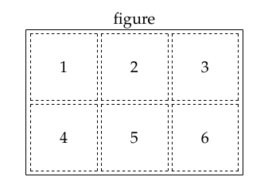
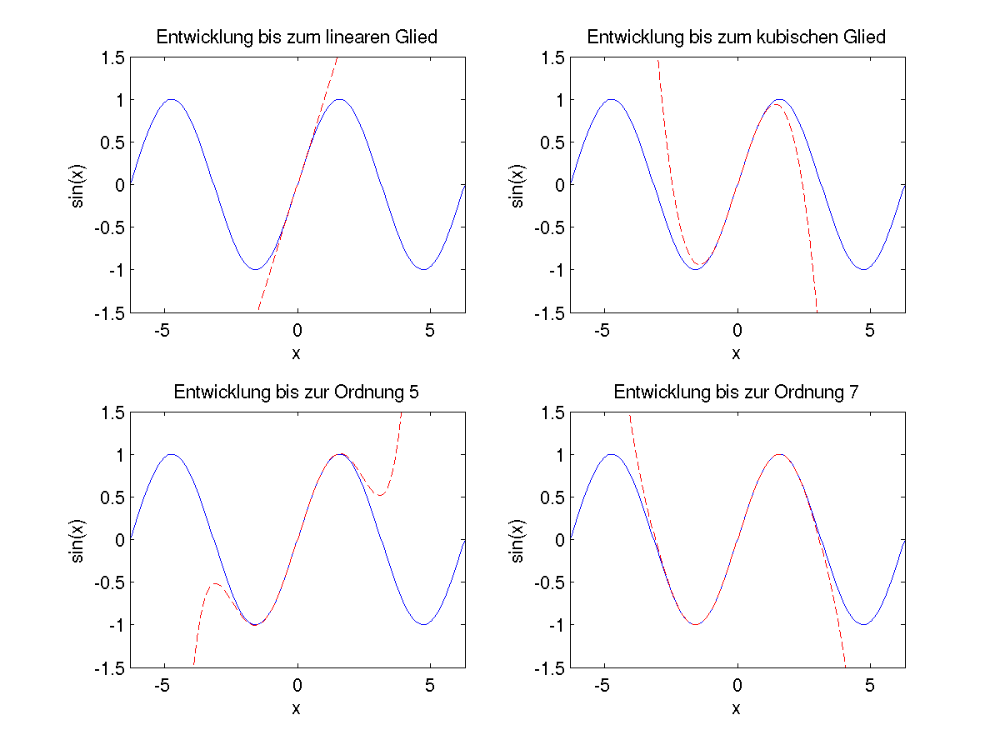

Die Taylorreihe für den Sinus bis zum vierten Glied lautet: $$ \sin(x) = x - \frac{x^3}{6} + \frac{x^5}{120} - \frac{x^7}{5040} + \ldots $$
Ziel dieser Übung ist, zu visualisieren, wie sich die Taylorreihe mit jedem berechneten Glied dem exakten Ergebnis annähert (Artikel der Wikipedia).
Definieren Sie im skript simple_taylor folgende Variablen:
x_max = 2*pix = Vektor mit 200 Stützstellen auf [-x_max,x_max] (lim = 1.5
Berechnen Sie damit die Variable y, welche als Werte den Sinus von x enthalten soll. Berechnen sie weiters y1, y2, y3 und y4, welche die Werte für die (oben ersichtlichen) ersten vier Terme der Taylorreihe enthalten sollen (z.B. $y4=-\frac{x^7}{5040}$).
Verwenden Sie den Befehl

Code-Beispiel
subplot(2,3,1)
% plotbefehle für den ersten Plot
...
subplot(2,3,2)
% Plotbefehle für den zweiten Plot
...
subplot(2,3,3)
% Plotbefehle für den dritten Plot
...
% usw.
Stellen Sie $2 \times 2$ Achsensysteme in einer
die lineare Näherung
die kubische Näherung
die Taylorreihe bis zum dritten Glied
die Taylorreihe bis zum vierten Glied
Dabei soll in jedem Subplot zuerst die blaue Linie und dann die rote gezeichnet werden. Beschriften Sie jeweils die Achsen, und erzeugen Sie auch eine Überschrift. Für eine schönere Darstellung empfiehlt es sich, die Grenzen der x-Achse auf [-x_max,x_max] und die der y-Achse auf [-lim,lim] zu setzen (
Ihre Graphik sollte in etwa so aussehen:

Da die Variablen y1 bis y4 nur die einzelnen Terme der Reihe enthalten, genügt es nicht, nur z.B. y4 über x zu plotten. Stattdessen müssen beim Plotten natürlich alle Terme niedriger Ordnung dazuaddiert werden.
Streng genommen ist die Bezeichnung der Terme mit den Indizes 1 bis 4 ungenau. Mathematisch gesehen ist bei einer Taylorreihe nämlich der erste Term jener, in dem $x^0$ vorkommt, der zweite jener mit $x^1$, der dritte (quadratische) mit $x^2$ usw.